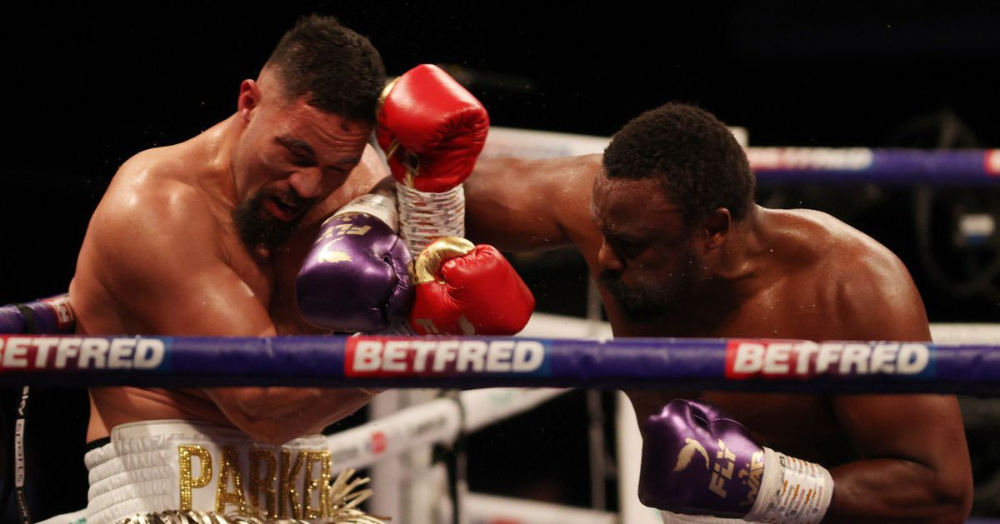

☰
Is This the final Clash between Darek Chisora and Parker?
Who wins the Joseph Parker vs Derek Chisora rematch?
Past WBO heavyweight champion Joseph Parker (29-2, 21KOs) rematches with ring rival Dereck Chisora (32-11, 23KOs) at the AO Arena in Manchester on December 18.
Fight fans are being honored to get a Christmas wafer of a test just days befor the eagerly awaited day, which is guaranteed to end the year with a bang, expecting the fundamental fight is anything to cruise by.
The Kiwi was down just seconds into their May initially fight, yet he stimulated back in the later acclimates to win on centers. 'WAR' Chisora is undaunted he won the test is at this point fuming at the named specialists' decisions, yet the two warriors have ensured they will end the fight early this time around, but who will back up their words?